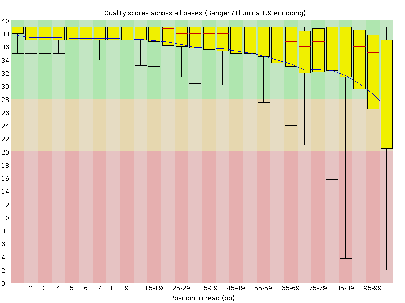
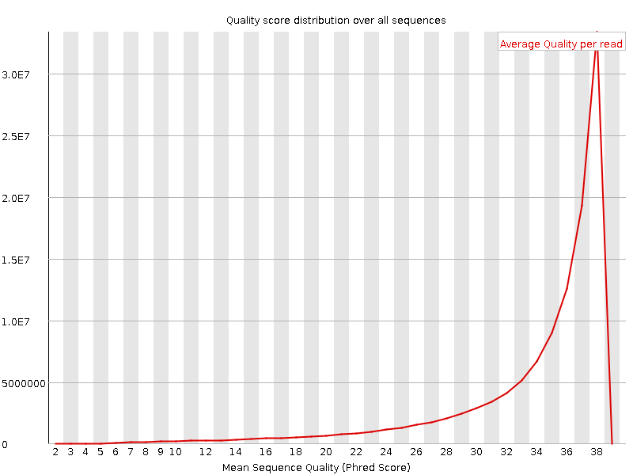
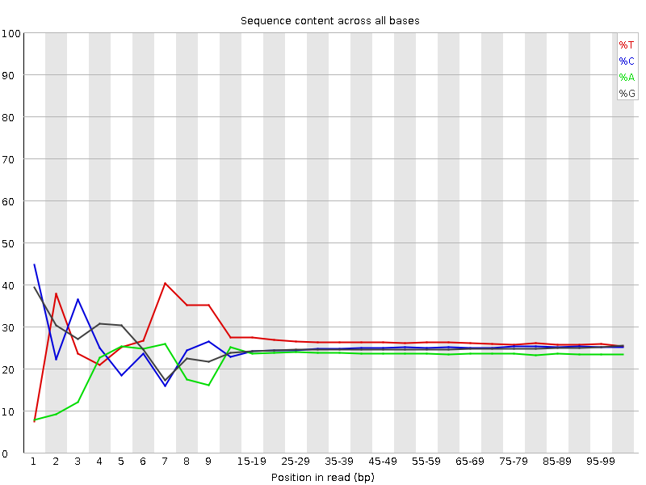
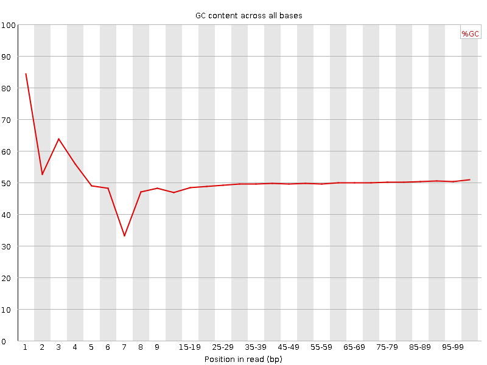
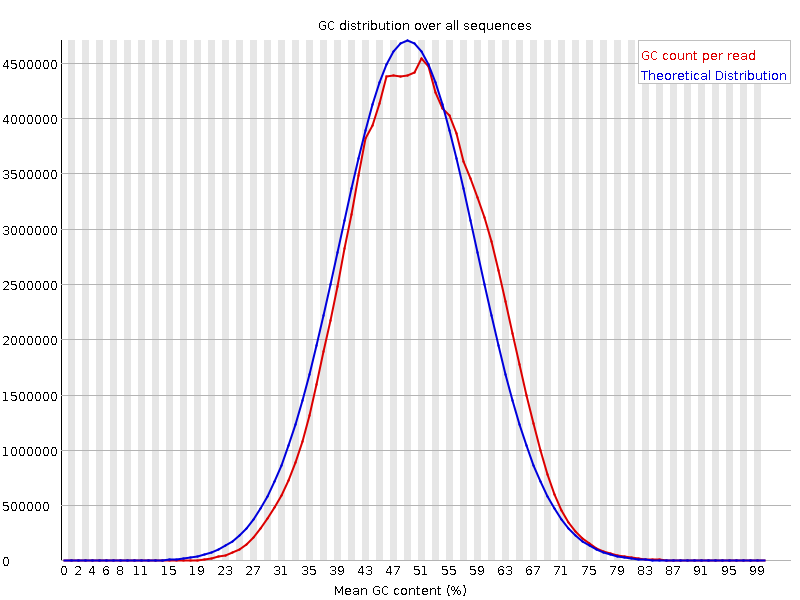
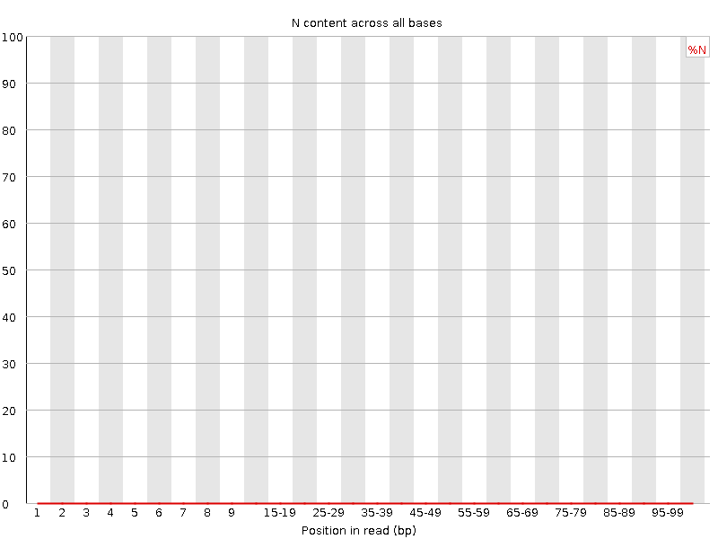
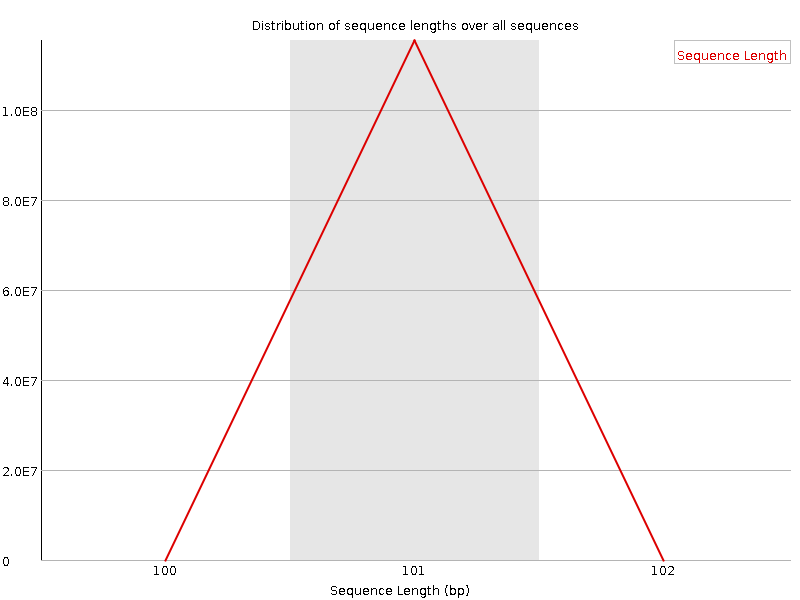
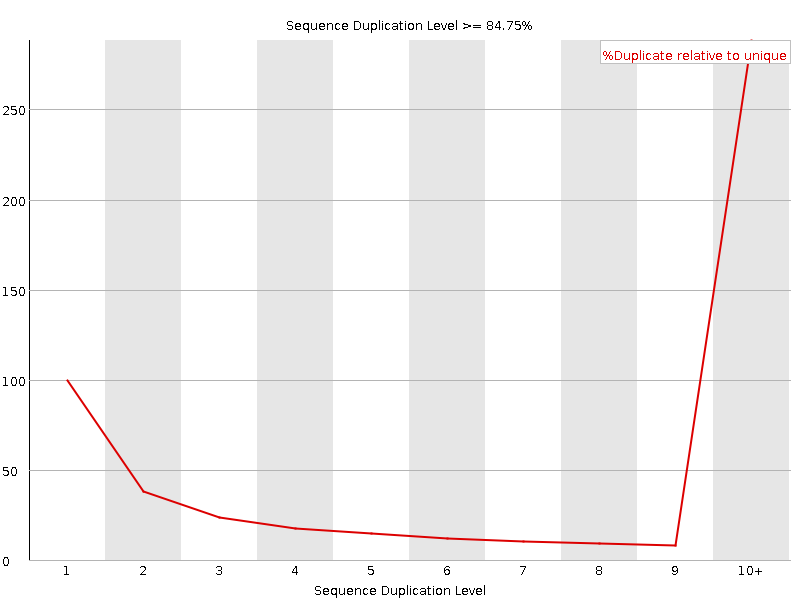
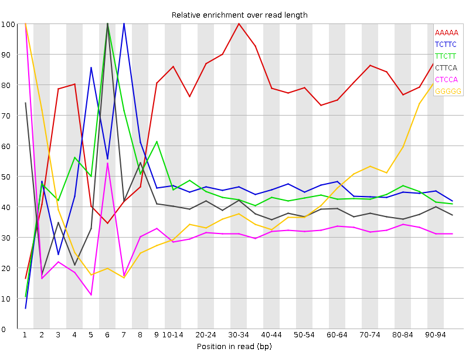

![[OK]](Icons/tick.png) Basic Statistics
Basic Statistics
| Measure | Value |
|---|---|
| Filename | SRR1153470.sra_1.fastq |
| File type | Conventional base calls |
| Encoding | Sanger / Illumina 1.9 |
| Total Sequences | 115359773 |
| Filtered Sequences | 0 |
| Sequence length | 101 |
| %GC | 50 |
Per base sequence quality

Per sequence quality scores

![[FAIL]](Icons/error.png) Per base sequence content
Per base sequence content

Per base GC content

Per sequence GC content

Per base N content

Sequence Length Distribution

Sequence Duplication Levels

Overrepresented sequences
No overrepresented sequences
![[WARN]](Icons/warning.png) Kmer Content
Kmer Content

| Sequence | Count | Obs/Exp Overall | Obs/Exp Max | Max Obs/Exp Position |
|---|---|---|---|---|
| AAAAA | 24206430 | 3.1409526 | 3.9098577 | 30-34 |
| TCTTC | 38655180 | 2.918474 | 6.3387303 | 7 |
| TTCTT | 37911215 | 2.7034614 | 6.0535126 | 6 |
| CTTCA | 29748025 | 2.5607133 | 6.5187187 | 6 |
| CTCCA | 27811755 | 2.5347013 | 7.9194345 | 1 |
| GGGGG | 27023815 | 2.4769084 | 5.3904543 | 1 |
| CTCCT | 30183160 | 2.412728 | 8.005055 | 1 |
| GGCAG | 24649380 | 2.4109993 | 9.543996 | 1 |
| CAGGA | 22908630 | 2.402059 | 5.841596 | 3 |
| TCCTC | 29773255 | 2.3799622 | 5.1554327 | 2 |
| CTGGG | 26845115 | 2.3030407 | 10.548274 | 1 |
| GCAGG | 23453005 | 2.2939796 | 5.247519 | 2 |
| GCCAG | 22339295 | 2.1751783 | 6.7529697 | 1 |
| CCCAG | 21703020 | 2.1036813 | 7.0790014 | 1 |
| TTCCA | 23200020 | 1.9970604 | 5.0609617 | 6 |
| GGCCA | 20430175 | 1.9892874 | 5.348685 | 1 |
| CCTGG | 22298925 | 1.9043846 | 5.490543 | 1 |
| CTGGA | 20671300 | 1.9010677 | 7.33628 | 1 |
| GGGAG | 19066825 | 1.87342 | 5.0824375 | 1 |
| CTTGG | 23057135 | 1.8598607 | 6.0131283 | 1 |
| CTCAG | 20294180 | 1.8579571 | 5.9337153 | 1 |
| GGGGA | 18881575 | 1.8552182 | 6.6890807 | 1 |
| TTCAG | 20977190 | 1.8139105 | 5.722454 | 7 |
| CTCTG | 22186195 | 1.7815262 | 6.134059 | 1 |
| GGGAA | 16173895 | 1.703589 | 5.7933707 | 1 |
| CTGGC | 19237770 | 1.6429541 | 5.1484966 | 1 |
| TTTCA | 20200055 | 1.6423277 | 5.037448 | 6 |
| GTGGG | 17380115 | 1.4978029 | 5.9876213 | 1 |
| TTCAA | 15941060 | 1.4776759 | 5.660574 | 7 |
| CTCCC | 17266050 | 1.4612763 | 5.3650784 | 1 |
| GTCCA | 15733715 | 1.4404408 | 5.16076 | 1 |
| CTGGT | 17438525 | 1.4066459 | 5.878573 | 1 |
| GTCAG | 15195295 | 1.3974586 | 5.3668 | 1 |
| GTGGA | 13039655 | 1.2046518 | 5.2562637 | 1 |
| CGGGG | 11373250 | 1.037725 | 7.076804 | 1 |
| CTCGG | 9195885 | 0.78535175 | 5.1516037 | 1 |